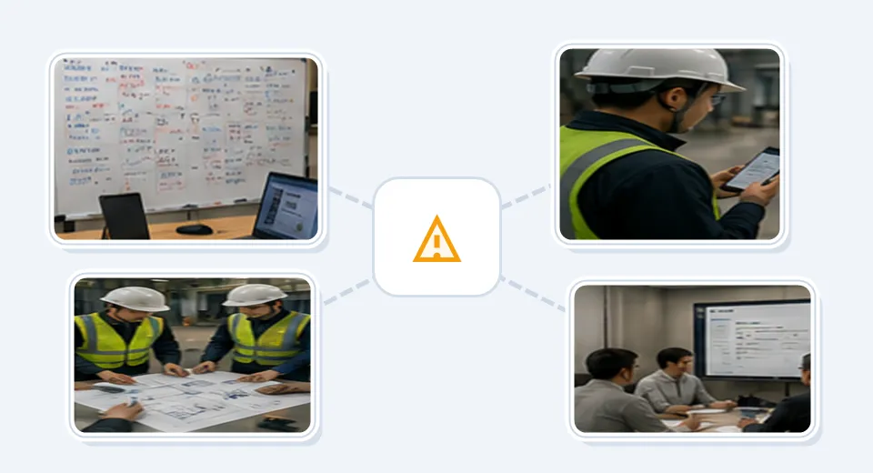
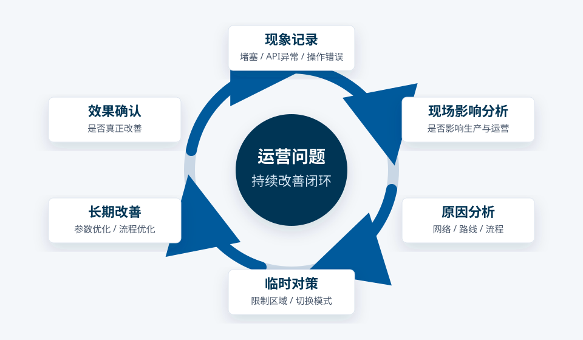
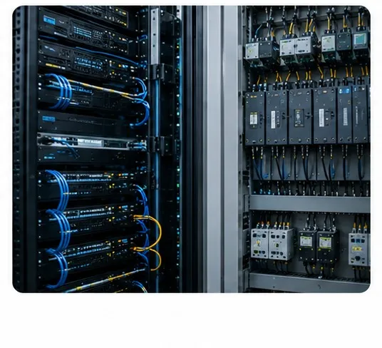
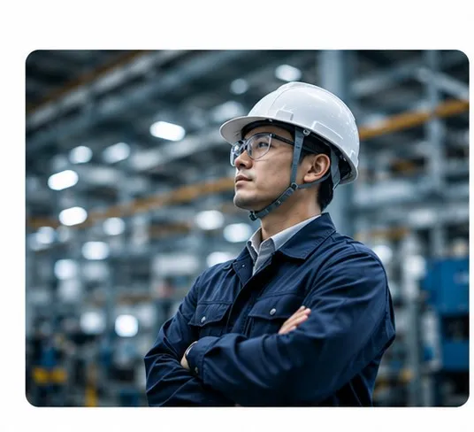

IZUMO SiteBridge
Post-Implementation Operations Improvement Platform
Enable intelligent systems to truly run stably in the field. Go beyond deployment and continuously improve operations.

IZUMO SiteBridge is an operations improvement platform for intelligent sites — robots, automation systems, AI systems, and beyond.
It connects on-site clients, remote technical teams, and field engineers, making post-deployment issue resolution, operations improvement, and long-term stable operations visible, sustainable, and manageable.
Use Cases
Intelligent sites that require continuous stable operations and cross-team improvement collaboration.
Logistics Robots
AGV / AMR route optimization, congestion management, station coordination, scheduling, and field process improvement.
Automated Warehousing
Operational stability management for inbound/outbound, picking, transport, and peak traffic flows.
Factory Automation
Continuous optimization of equipment interlocking, production workflows, personnel operations, and field changes.
AI Vision Systems
Analysis of operational issues caused by false positives, missed detections, environmental changes, and on-site work habits.
Smart Transport Systems
Route conflicts, wait times, temporary restricted zones, and capacity adjustments.
OT / IT Converged Sites
Data center automation equipment and cross-system, cross-vendor operational environments.
Why Do Intelligent Systems Still Fail After Deployment?
Many projects complete installation, pass testing, and receive acceptance — but once they enter real field operations, problems begin to emerge.
Real Workflows Are More Complex Than Demos
Field operations involve numerous exception workflows that differ significantly from vendor demo scenarios, making it difficult for clients to use robotic systems smoothly.
System Not Aligned with Field Processes
When work habits and business processes change, the system does not adapt accordingly. Inefficiencies such as detours, waiting, and duplicate data entry emerge.

Opaque Issue Resolution Process
Clients do not know whether issues are being handled correctly. Temporary fixes, responsibility allocation, recovery time, and long-term improvement direction remain unclear.
Overseas Teams Cannot Understand the Field in Real Time
Remote teams can analyze logs but lack field observation and operational context. They see system data but cannot grasp why the field operates the way it does.
How SiteBridge Helps the Field Run Stably
SiteBridge is not traditional PM software. It focuses on long-term operational stability after system deployment.

Operational Issue Lifecycle Management
From issue occurrence to root cause analysis, temporary countermeasures, long-term improvement, and effectiveness verification — forming a complete closed loop.
SiteBridge connects field phenomena, operational impact, analysis processes, and improvement outcomes, turning every issue resolution into an asset for future stable operations.
Operational Issue Closed Loop
SiteBridge workflow| Stage | Description |
|---|---|
| Incident Recording | Robot jam / API error / Operator mistake |
| Field Impact Analysis | Affecting production and operations? |
| Root Cause Analysis | Network / Route / Process / Scheduling logic |
| Temporary Countermeasure | Restrict zone / Switch mode |
| Long-Term Improvement | Parameter optimization / Process optimization |
| Effectiveness Verification | Has it truly improved? |
Operational Status Visualization
Clients can view current system status, current risks, current issue resolution progress, and current operational impact in real time, providing the reassurance that the field is "under control."
Field Observation & Operations Analysis
Beyond log analysis, we focus on personnel behavior, operational changes, peak traffic, route conflicts, and work habits to truly understand why problems occur in the field.
Remote Technical Team Collaboration

Connect overseas development teams, Japan-based field staff, client operations personnel, and IZUMO field engineers to make the issue resolution process transparent and structured.
Continuous Improvement Mechanism
Manage temporary recovery, long-term improvement, and effectiveness verification separately to prevent recurring issues and avoid leaving improvement measures as verbal commitments.
SiteBridge vs. Traditional Systems
Comparison View
| Traditional PM / Ticket System | SiteBridge |
|---|---|
| Manages tasks | Manages operational issues |
| Focuses on project progress | Focuses on long-term stable operations |
| Records bugs | Analyzes field operational issues |
| IT perspective | OT field operations perspective |
| Ends when project ends | Continuous improvement after acceptance |
| Software-driven | Field operations-driven |
The IZUMO Value
SiteBridge is not just software. More importantly: field-aware operations improvement capability.
IZUMO combines field engineering experience, OT/IT understanding, multi-vendor coordination capability, and hands-on experience deploying intelligent systems on site to help clients keep complex intelligent systems truly running stably in the field.

The Future-Ready Field Operations Platform
As robots, AI, automation, and OT/IT convergence continue to expand, what the field truly needs goes beyond system deployment.
What is truly needed: long-term stable operations and continuous improvement capability.
IZUMO SiteBridge connects the field, the system, and operations. Enabling intelligent systems to truly serve the field.
Make Intelligent Systems Truly Stable in the Field
From field deployment and operational support to continuous improvement — IZUMO provides long-term stable operations support for your intelligent systems.
Let's discuss your field operational challenges.